英文
英文查德威克，伽莫夫
编者按
1919年，欧内斯特·卢瑟福发现α粒子射入氮气后可以产生氢，这显然是因为α粒子被俘获的同时把一个质子赶出了原子核。卢瑟福把这个过程称作原子的“人工衰变”（更通俗地说是裂变）。詹姆斯·查德威克和乔治·伽莫夫在本文中提出，在没有α粒子进入原子核的情况下我们也可以得到质子。伽莫夫还指出，质子所带电荷数只有α粒子的一半，它有可能更容易接近带正电的原子核。这种观点推动了剑桥大学的约翰·考克饶夫和欧内斯特·瓦耳顿的工作，他们用高压装置把质子加速到很高的能量，然后通过质子轰击首次实现了锂核的诱导裂变。 英文
通常的假设是，一个α粒子与原子核发生碰撞的人工衰变过程，是由α粒子穿透到核系统内部导致的；在α粒子被俘获的同时，也会发射出一个质子。 英文
按照通常的观点，另外一种过程也可能发生，即在没有俘获α粒子的情况下，释放出一个质子。 英文
研究一个处于图1所示的势场条件下的核，其中实线代表α粒子的势垒，虚线代表质子的势垒。令原子核中质子的稳态能级为
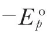
，被俘获后的α粒子的能级为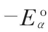
。 英文
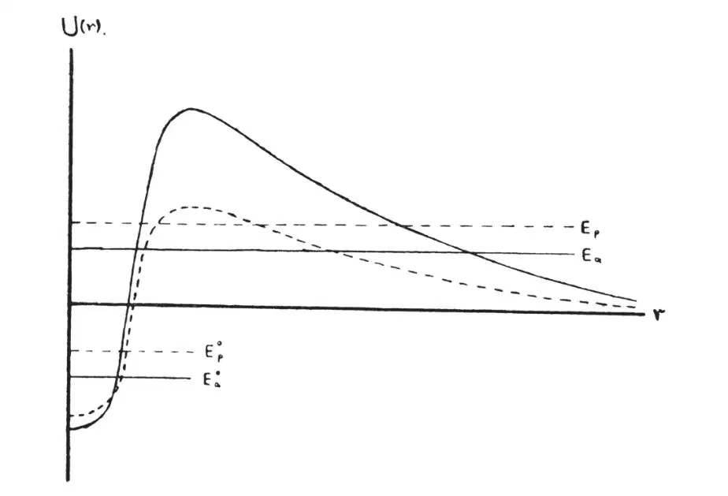
图1 英文
如果动能为Eα的α粒子穿透到这个核的内部并被俘获，那么衰变中发射出的质子的能量是
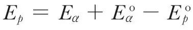
，这里忽略了此过程中反冲核的微小动能。如果在核衰变的过程中没有俘获α粒子，α粒子的初始动能将在发射出的质子与逃逸的α粒子之间分配（再次忽略反冲核）。在这种情况下，衰变质子的能量可能是Ep = 0与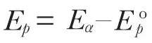
之间的任意值。 英文
因此，如果这两种过程都存在，那么衰变的质子将由两部分组成：最大能量小于入射α粒子能量的连续谱和能量大于或小于初始α粒子能量的线状谱，相当于
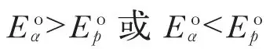
，但对于这两种情况中的任何一种，能量都比连续谱的上限大很多（见图2）。 英文
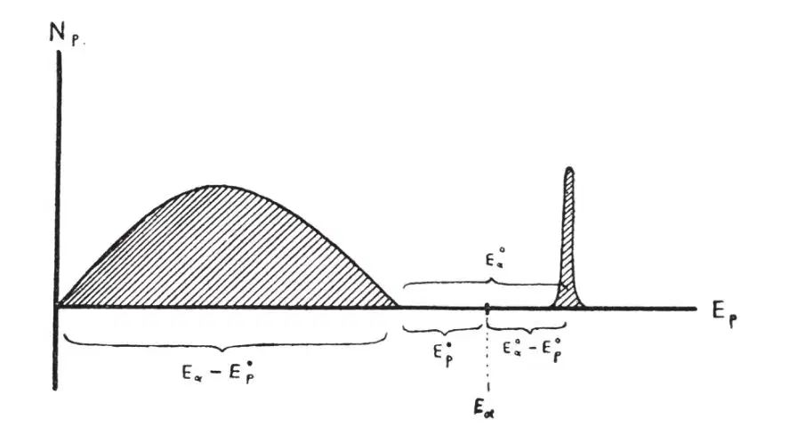
图2 英文
在我们中的一位与康斯特布尔和波拉德合作进行的一些实验中，在某些情况下这两组质子的存在会非常明确地表现出来，比如，硼和铝的情况。关于这些以及其他一些衰变的情况将会在别的地方给出全面的讨论，但可以注意到的是，博特和波泽已经报道了多组质子的存在。一般而言，实验结果显示，当入射α粒子（钋的α粒子）的能量约为5×106电子伏时，非俘获过程发生的频率比俘获过程高出几倍。 英文
显然，如果我们的假设是正确的，那么对连续谱和线状谱上限的精确测量将使我们能对原子核中的质子和α粒子的能级数值进行估计。在用钋的α粒子轰击铝的情况下，在连续谱中质子的最大范围为32厘米，而在那些线状谱中的范围为64厘米。由这些测量得到的能级近似值如下：
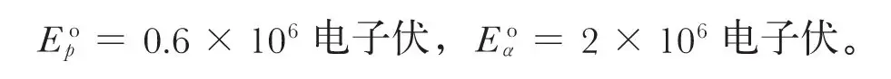
根据波动力学，两种类型的衰变概率由积分的平方给出
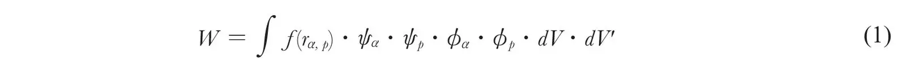
式中f(rα, p)是相距为rα, p的一个α粒子和一个质子之间的势能，波函数ψα和ψp表示α粒子和质子在衰变前的解，ϕα和ϕp表示它们在衰变后的解。在计算积分（1）时，我们必须将α粒子的入射平面波展开为对应于α粒子不同角量子数的球谐函数的形式，并对每一项分别处理。 英文
在俘获α粒子的情况下，对（1）式进行估算非常简单。可以看到的是，高次谐波的效应很小，衰变几乎全部由直接碰撞产生。因此我们可以得到衰变概率
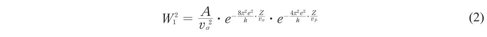
式中vα和vp分别是初始α粒子和发射出的质子的速度。因为在这类衰变中，只有一次谐波起主要作用，所以可以认为质子在所有方向上都是均匀分布的。 英文
当α粒子未被俘获时，衰变将主要通过α粒子并不穿透到核内的碰撞产生。在由这种方式产生的衰变过程中，高次谐波开始起主要作用。衰变概率可以通过下述公式近似地表示
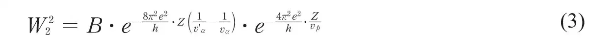
式中v'α是碰撞后α粒子的速度，B是质子发射角度的函数。连续谱中的质子在各个方向上的发射并不均匀。根据表达式（3），连续谱中质子的能量分布，在约为上限的0.3处其发射能量达到最大值，而在上限处突然变为零。 英文
不久之后，我们将给出关于实验结果和理论计算的更详细的解释。 英文
（沈乃澂 翻译；江丕栋 审稿）